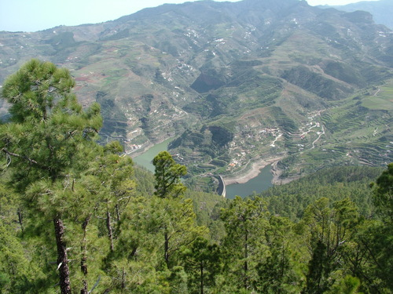

Camino del Pico de la Bandera
Sendero que desde la Casa Forestal conduce a la cima de Tamadaba, el Pico de la Bandera, mirador natural con una completa panorámica sobre el sector centro-occidental de la isla.
Acceso :La Casa Forestal de Tamadaba, punto de partida del itinerario se halla junto a la carretera GC216, a7,3 Km. del Cruce de la Cruz de Acusa y a 10,5 Km. de Artenara,.
Itinerario: El acceso mas corto al Pico de la Bandera es siguiendo el buen sendero que desde la Casa Forestal sube directamente hacia esta cima. El sendero parte a la derecha (oeste) de la Casa y asciende en suave pendiente pinar arriba. Tras cruzar un barranquillo pasa junto a un bloque rocoso curiosamente erosionado (pinos viejos, sobre sotobosque de brezos y helechos). La ascensión continúa en amplios serpenteos por un sendero ancho y evidente hasta alcanzar llegar a lo alto del lomo en una amplia degollada. En esta zona el pinar se aclara permitiendo apreciar el paisaje circundante. El sendero gira a la izquierda, dirección NE, y continua llaneando e incluso bajando levemente por la ladera que se halla a los pies del promontorio rocoso en el que destaca la caseta de vigilancia forestal hacia la que sube un pequeño sendero que remonta en terreno rocoso hasta llegar a la casta y al pilón geodésico que marca la altura máxima de Tamadaba, 1444 m. Si el día es claro desde aquí se contempla una de las panorámicas mas completas de Gran Canaria: las cumbres Norte y Central así como las medianas occidentales de la isla. Gran parte de la caldera de Tejeda con los macizos de Inagua y Güigüi. Y mas lejos, a poniente, Tenerife con la silueta del Teide y a naciente, los volcanes de la Isleta y la playa de las Canteras en Las Palmas.
El regreso habitual es desandando el itinerario de ascenso pero se dispone de tiempo y apetece se puede ampliar el recorrido siguiendo el itinerario que rodea la montaña y llega de nuevo a la Casa forestal, completando el circuito: Se desciende de la cima hasta alcanzar de nuevo el sendero por el que se continua a la izquierda, dirección NE, en suave bajada por la despejada ladera oriental de la montaña antes de iniciar una serie de serpenteos terreno mas pendiente y cubierto de pinar con sotobosque de jaron del lomo de Siete Pinos que acaba en la llana degollada de Chiqueritos En esta llanada se encuentra un cruce de caminos en que se ha de evitar el de la derecha y el que sigue de frente para seguir el que por la izquierda desciende la vertiente norte del la montaña en un ambiente de pinar mas húmedo y sombrío hasta alcanzar la carretera GC-216 Por esta carretera ella se continua, bajando a la izquierda, hasta llegar a un cruce de carreteras en el que se evita la que, por la derecha conduce al Campamento y al área recreativa, siguiendo por la de la izquierda que tras una corta subida llega de nuevo a la casa forestal.
Tiempo estimado:3 Horas y 40 minutos